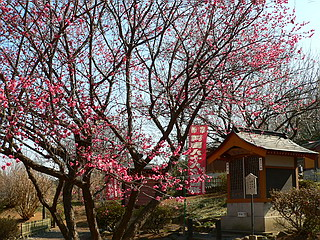
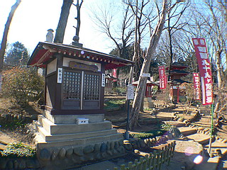

真東寺 その2/埼玉県美里町
さて、プチ遍路の旅は修行の道場、高知県に突入する。

二十五番津照寺。
大師作と伝えられる地蔵菩薩、のレプリカが祀られていて、その上には艶やかな天女の額が。
ここも何故か二十四番最御崎寺や二十六番金剛頂寺といったメジャーどころを差し置いて立派なお堂が作られている。
とことん傾向が読めない。
私が訪れた時期は紅梅が満開で、この霊場全体がやけに浮世離れした雰囲気に満ち満ちていた。

梅の花の眺めと香りにココロ奪われつつ歩いていると目の前に巨大な塔が現れた。
この霊場の中でも最も本格的かつ規模の大きい建造物である三十一番竹林寺の五重塔（のレプリカ）だ。
最早ここまでくると住職の微笑ましい日曜大工といったレベルをはるかに凌駕して本チャンの域に達しようかという勢い。
軒下の垂木なども一本一本作ってある。まあ、細かいところはご愛嬌、という事で。
いずれにせよこの霊場作りに賭ける熱い思いを感じ得るには充分な力作である。
個人的にはこの三十五番清滝寺の大観音と台座の胎内巡りをフューチャーリングして欲しかったぞ。
立派な五重塔を過ぎるといよいよ菩提の道場、愛媛県。
と、いきなり鳥小屋のような祠が出現。
何かと思ったらホントに鳥小屋でした。
しばし鳥を眺めてから巡礼再開。
この辺になるとかなりお腹一杯状態になってくる。リアルお遍路さんもこの辺で辛くなってくるのだろうか。
案内板の柱に「信の一字は心の土台 一つひとつの積み重ね」と書かれていた。うむ、まさにその通り。頑張りまっす。
四十三番を過ぎると行く手は石垣に突き当たる。
遍路ころがし、という事なのだろうか。
その石垣に埋め込まれるように四十四番大宝寺が現れる。
今までにない形式だ。
石垣に埋まった赤い部分を見れば何故かコイン投入口。
真ん中には覗き窓が。のぞきからくりじゃあないすか！
あ、周りはまたしても五円玉のネジどめだ…
もちろんコインを即投入。
と、そこに浮かび上がったのは観音サマだった。
のぞきからくりとは箱の中身をレンズを通して覗くことで強い遠近感を体感するものなのだが、ここのは真ん中にポツンと観音サマだけがあって、遠近法を強調するモノではなかったです。
同じく石垣沿いには四十五番岩屋寺の奥の院の洞窟が作られている。
こちらもかなり本気モードで作られており、石積みで小さな人工洞窟が作られており、そこに本尊の不動明王が祀られている。
また、瓦屋根のあしらわれた洞窟の真上には五重の石塔が立っている。洞窟から直接行けないので別の札所のようでもあるが特に○○番札所という表記がなかったので洞窟に付随するものだと思われる。
この石垣から洞窟、そして石塔までのトータルでのデザインの格好よさは何ともいえないモノがありました。
洞窟内の不動サマ。左右の花は造花でした。
そりゃあこの霊場だけだって最低八十八対の花を手向けなければならないわけだし、造花しかないでしょ。
四十四、四十五番と大技が続きしばらくおとなしめの札所が続いた…
と、思う間もなく次の大技。
石手寺三重塔である。
石手寺といえば当サイトの古くからの読者貴兄なら御存知かと思うが、国宝三重塔などぶっ飛んでしまうような珍寺
だったりするが、ここでは間違ってもトーテムポール仏などおくびにも出さない、あくまでも大人の対応なのである。
もっとも、この三重塔にUFOみたいな仏殿のミニチュアとか置いてあったら物凄くマニアックなアイロニーだったりするが。
ここも日曜大工以上宮大工以下の仕事っぷりを発揮している。垂木の小口の緑ペイントとかの本気丸出しじゃない感じが又イイですね。あくまでもレプリカじゃなくてオマージュ、という姿勢。
例えばこの三重塔や先ほどの五重塔を完璧に再現したらどうなるだろう？
わかりやすくて良い？はい。その通りです。
でもデフォルメしたものの方が四国巡礼に行った事がない人はそのシンプルさに余計思いを馳せはしないだろうか？
ギチギチに完コピされた建物よりも見る人が想像力で補おうとして、「ああ、ホンモノはもっと立派なんだろうなあ〜」と遍路への憧れを増したり、一方、遍路体験済みの人もシンプルな造形の上に自分の記憶というレイヤーを貼り付けて行く事で遍路をしたときの思い出を完補してそれぞれの遍路の記憶を再構築していくのではなかろうか。
そういう意味でこのポイントポイントで現れるデフォルメされた塔は四国八十八ヵ所遍路を上手く再現する装置として重要な位置を占めていると言わざるを得まい。
ま、リアルに作れなかった、といっちゃえばそれまでですけど。
今さらながら弘法大師の石像。
この大師像に対面するカタチで先程の卍型台座の石碑があった。
さて、そうこうしている内にいよいよ遍路最終段階、涅槃の道場、香川県に突入である。
で、香川といえばコレも外せませんね。金毘羅さん。
ここの階段はやけにあっさりだったし、もちろん絵馬殿などありませんでした。
六十八番、六十九番と段々最終ステージに近づいて来た。
最初一桁の頃は何時終わるものかと気が気でなかったが、こうして最終段階になると涅槃の境地、とまでは行かないが、細々とした心配事が無くなりいつしか遍路を楽しむ気持ちに集中出来ている自分に気がつく。
本当のお遍路さんもそんな気分なんでしょうか。

七十三番出釈迦釈迦寺。
天狗のお面が掲げられている。
この寺のある倭斬濃山は有名な大師身投げ伝説の現場だ。
祠の前には出釈迦寺から出土したという仏足石がある。
七十七番、道隆寺。
ここもお遍路界のヒエラルキーとは関係なく何故か立派な塔屋だった。
さて、そんなこんなでいよいよ感動のグランドフィナーレである。
八十八番大窪寺。最後はやや地味なブロック囲いの祠だった。
気がつくと八十八番の隣にはスタートした一番札所が。
ああ、ぐるっと1周してきたのか…
緩急使い分けたギミックの連続。
常に巡礼を飽きさせないように様々な工夫を凝らしているこの寺のミニ霊場の姿勢に感動した。
さて、無事満願を果たした方はこちらの満願堂へ。
こちらも住職の手作りというから驚くほか無い。鉄筋コンクリまで手がけるのか〜。
昭和55年に出来たというこの建物。
中には観音サマが祀られている。
満願の報告をしつつ、観音サマの背後を見ると…
あっ！また五円玉ネジ止めだ！
余程この手法が気に入ったのだろう。ま、確かにインパクトありますからね。
何故か五円玉の大きなレプリカまで。五円、ご縁。
そんなこんなでプチ四国八十八ヵ所巡りも終了。
お遍路の経験はないが、札所のいくつかは寄ったことがある、という立ち位置の私としては若干記憶を喚起しつつまだ見ぬ札所の数々、そしてお遍路自体への憧れを増大した次第。
本堂前に戻ると客殿の向こうに何本か塔屋が見えている。
改めてこの霊場を作った住職のホットな想いに対してただただ感心するばかりである。
情報提供はまんじまるさんです
2007.2.
珍寺大道場 HOME